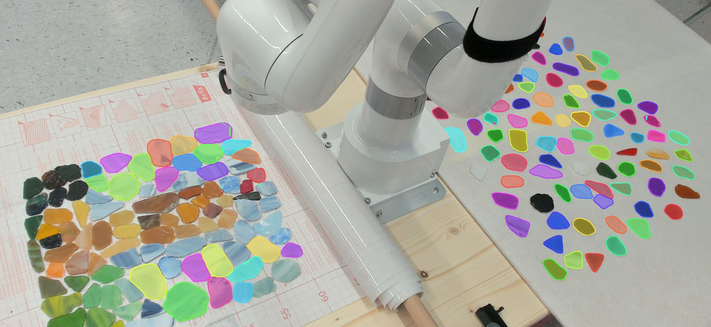

DECOR aims to study diffusion-based ergodic coverage approaches in robotics. The goal of this initiative is to advance ergodic control theory and its applications in robotic exploration, sensing, and manipulation. Ergodic control is an emerging paradigm in robotics that enables autonomous agents to explore spatial distributions in proportion to their informational density, producing natural and efficient search and coverage behaviors. Unlike conventional target-based control or stochastic sampling, ergodic control minimizes the mismatch between a robot's time-averaged trajectory statistics and a target distribution, yielding robust performance in tasks such as active sensing, localization, surveillance, inspection, and manipulation under uncertainty./
The project is a collaboration between the Idiap Research Institute (Switzerland) and the Faculty of Engineering, University of Rijeka (Croatia), combining expertise in robot learning, optimization, Unmanned Aerial Vehicle (UAV) control, and diffusion-based ergodic methods. Prior to this project, both teams have contributed seminal work to the field, including tutorial activities (ICRA 2024), research exchanges (visiting PhD students), and a recent journal publication on dynamic distribution exploration and multi-UAV ergodic search.
The research plan is structured along two complementary tracks. Research Track 1 (Methods) will develop novel theoretical and numerical frameworks for ergodic control, including:
These methodological advances will be released as open-source C++/Python libraries to maximize accessibility and impact.
Research Track 2 (Applications) will demonstrate and validate the developed methods in four demanding real-world domains:
Field experiments will employ state-of-the-art robot platforms that are already available in the consortium, including newly acquired LiDAR-equipped UAV platforms, to ensure realism and robustness, as well as torque-controlled Franka robotic arms.
DECOR will bridge fundamental research in ergodic control with practical robotic applications, pushing forward the state of the art in autonomous search, inspection, and surface treatment. By unifying methods from control theory, geometry, and numerical optimization, the project will establish ergodic control as a versatile framework for intelligent exploration under uncertainty. Open-source dissemination will foster uptake by the wider robotics community, while extensive real-world demonstrations will provide evidence of its industrial and societal relevance, including effective search-and-rescue operations, scalable infrastructure monitoring, and novel industrial automation capabilities.